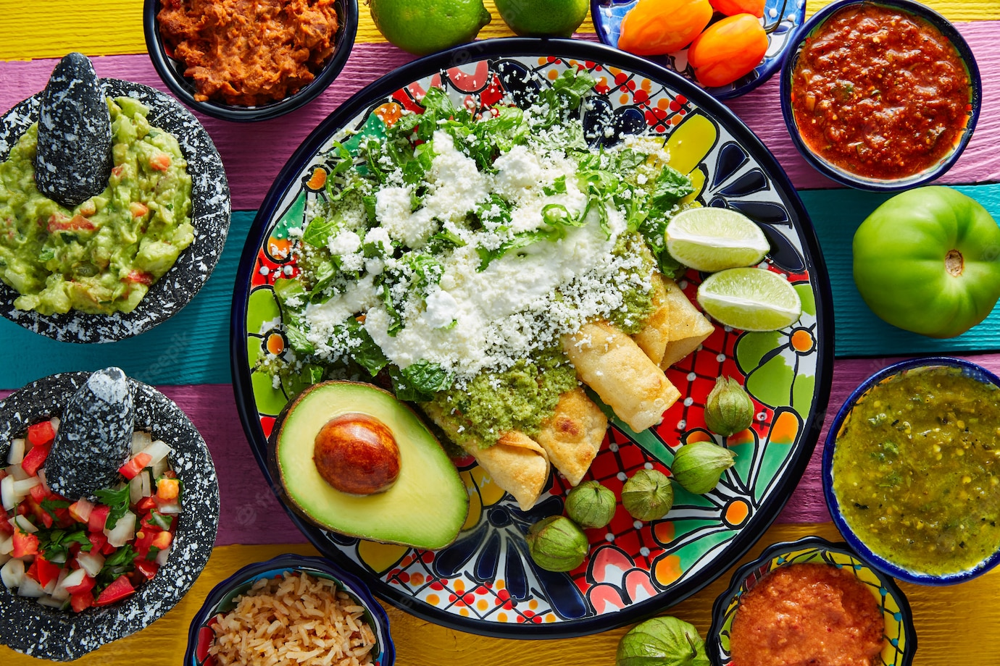
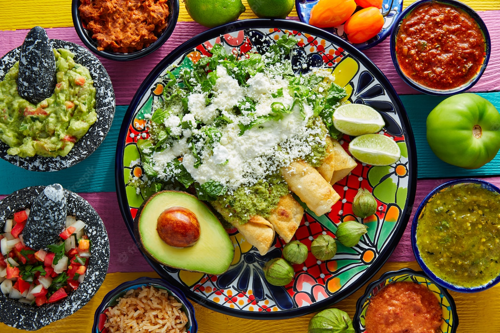
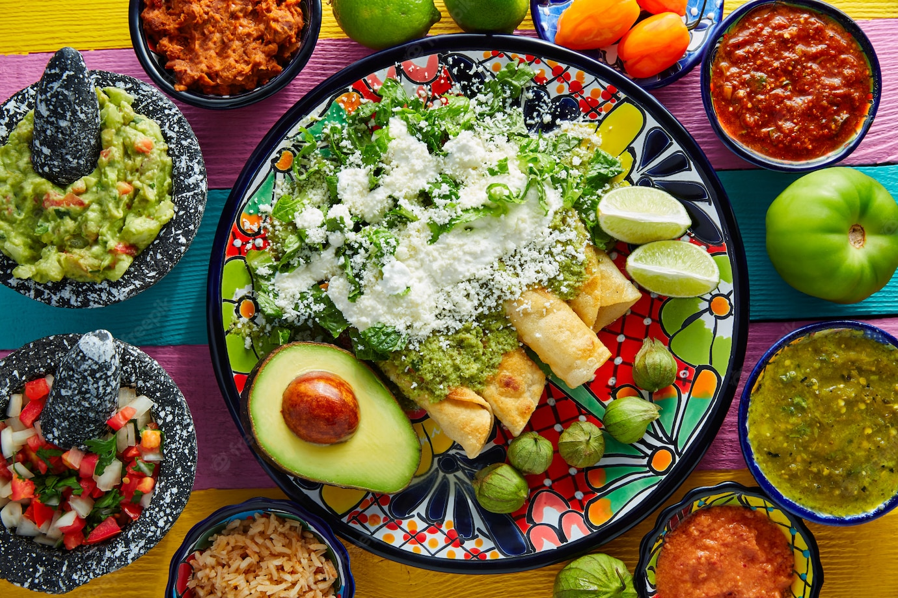

>

>


Comidas son aquellos nutrientes en forma de alimentos que se ingieren para sobrevivir. Se conoce como alimentación al proceso que un individuo desarrolla conscientemente para comer y beber estos alimentos, lo que da lugar al mecanismo de la biología que recibe el nombre de nutrición (a través del cual el cuerpo asimila el alimento) El menú de esta puede llegar a variar de acuerdo a la región en la que se encuentre una persona, por ejemplo, si se está en México, lo común es que se consuman los diferentes tipos de comida mexicana o, en su defecto, comida chatarra.
>

Carbohidratos : Son conocidos por tener un sabor muy dulce y tienen como función primordial dotar de energía a toda la anatomía humana. Originalmente los hidratos de carbono se encuentran en legumbres, frutas, verduras, etc. Aunque también están muy presentes en las comidas y alimentos preparados como en refrescos, dulces, chucherías, etc.
Proteínas: Se trata de al menos 20 aminoácidos que se unen para formar lo que se conoce como proteínas, aquellas que actúan en el organismo para lograr la regeneración muscular y de los tejidos
Grasas: Estas le brindan al cuerpo mucha energía, pero cuando hay demasiada grasa en el organismo, se tienden a padecer anomalías o enfermedades. Las grasas tienen una clasificación importante que denota su tipo y correcta ubicación. Las saturadas nacen en los animales, las monoinsaturadas se encuentran en las aceitunas, aceite de oliva y los aguacates o paltas y, por último, las poliinsaturadas que se encuentran en las semillas y aceites (mejor conocidas como el omega 3) Las grasas, en cualquiera de sus tipos, debe ser mínima en la comida para diabéticos.
Lípidos Tal como lo hacen las grasas y carbohidratos, los lípidos hacen que el cuerpo esté enérgico durante el día, sin embargo, también tienen otra función y es la de proporcionar una temperatura adecuada al cuerpo, así como también mantenerla regulada.
Sales minerales: Se trata de las sales neutras que mantienen en completo control al metabolismo. Se conoce como sal mineral a la sal de mesa que se emplea frecuentemente en la comida, de hecho, si no se utiliza, se tiende a decir que el plato culinario resultó ser muy insípido.
Compuestos inorgánicos: Se trata de compuestos o elementos inorgánicos que el cuerpo no puede producir, sin embargo, se encuentran en alimentos, suplementos alimenticios y medicamentos especiales. Los minerales, el agua y el nitrógeno forman parte de estos compuestos.
Minerales: Son elementos de suma importancia para el organismo, no solo a nivel metabólico sino también estructural, pues algunos minerales funcionan en los huesos, por ejemplo, el calcio.
https://conceptodefinicion.de/comida/.